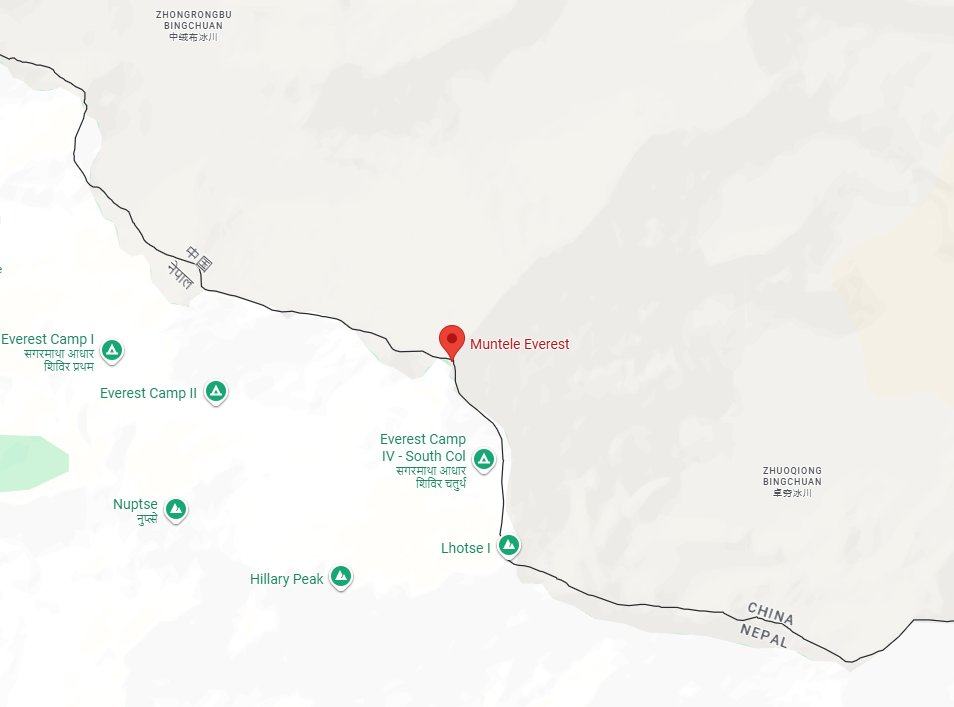
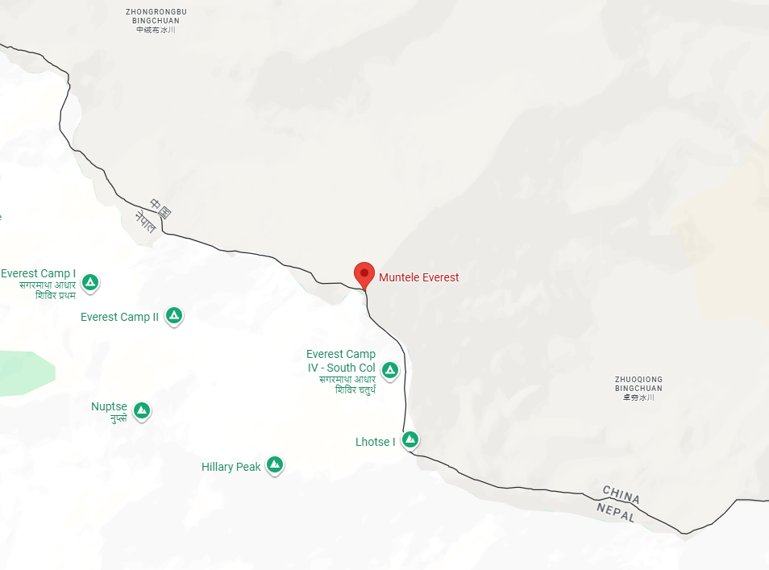
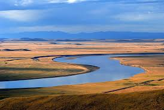
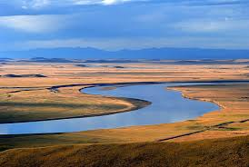
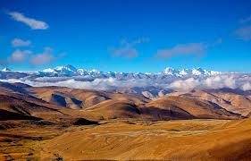
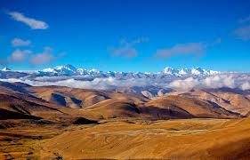

Vestul este muntos, cu lanțuri impresionante precum Himalaya, unde se află și vârful Everest (pe granița cu Nepal)
 

Altitudini de peste 8000m
Estul este format din câmpii fertile, traversate de fluviile Yangtze (Chang Jiang) și Huang He (Fluviul Galben), care au susținut civilizațiile agricole chineze.
 

Altitudini sub 200m
Țara are de asemenea deșerturi (Gobi, Taklamakan), podișuri (Tibet) și o linie de coastă lungă la Marea Chinei de Est și de Sud.
 

Altitudini de peste 4000m